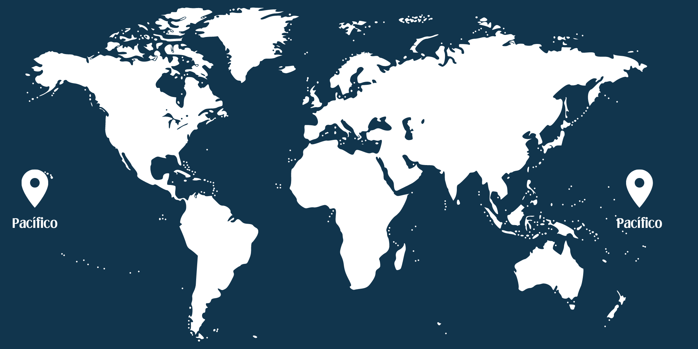
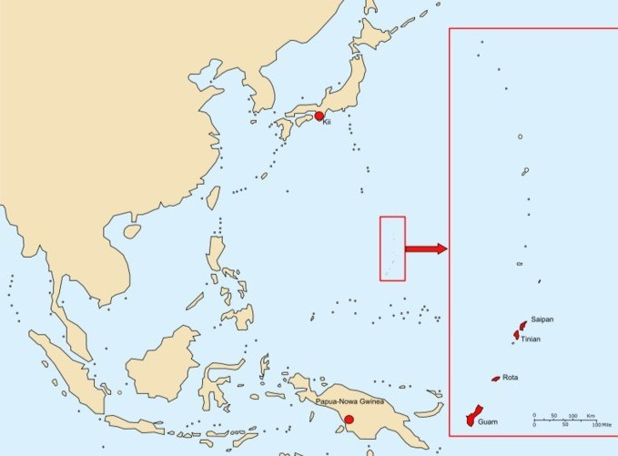
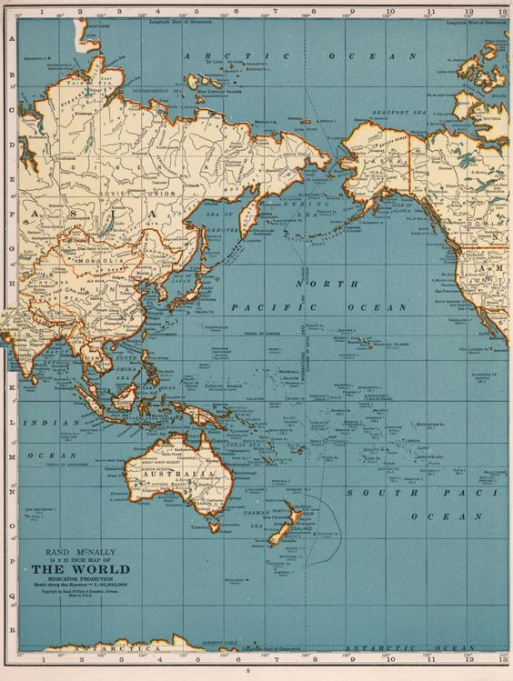
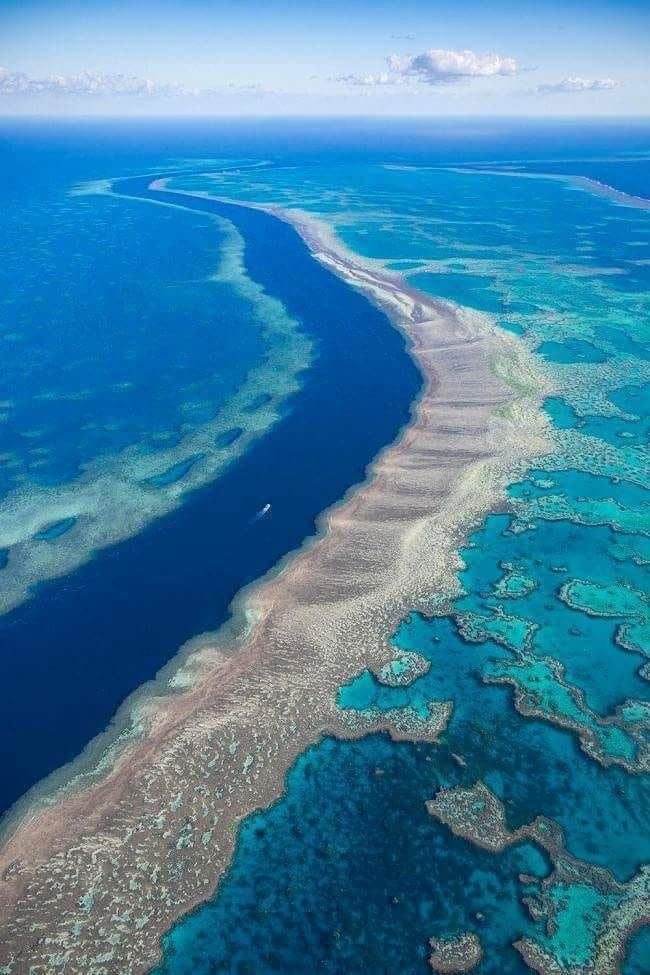
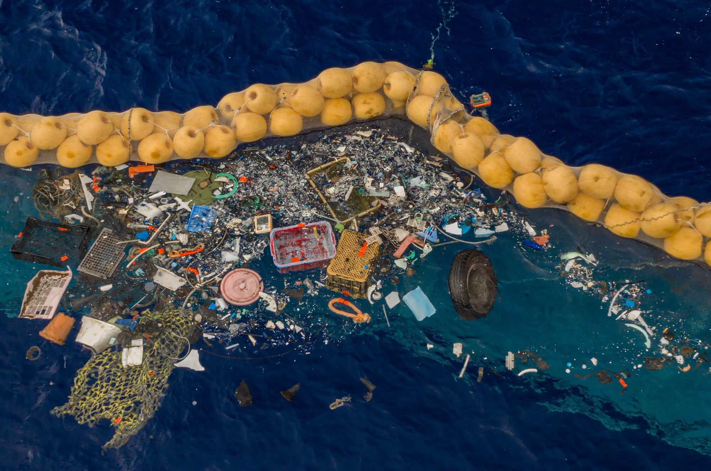

Introdução
O Oceano Pacífico é o maior e mais profundo dos cinco oceanos da Terra, cobrindo mais de 165 milhões de quilômetros quadrados, o que representa cerca de um terço da superfície do planeta. Este vasto corpo de água desempenha um papel crucial na regulação do clima global, influenciando padrões meteorológicos e correntes oceânicas. Além disso, o Pacífico é um ecossistema vital, abrigando uma biodiversidade rica e variada que inclui desde minúsculos plânctons até enormes mamíferos marinhos como baleias.
Historicamente, o Oceano Pacífico tem sido um meio de conexão entre as culturas e civilizações espalhadas por suas margens. Desde os primeiros navegadores polinésios que colonizaram ilhas remotas, até as grandes expedições europeias de exploração nos séculos XVI e XVII, o Pacífico tem sido um canal de troca cultural e comercial. As águas do Pacífico não só permitiram o intercâmbio de bens e ideias, mas também desempenharam um papel estratégico em conflitos e na expansão de impérios.
Hoje, o Oceano Pacífico continua a ser de importância estratégica e econômica global. As rotas de navegação no Pacífico são vitais para o comércio internacional, conectando economias asiáticas emergentes com mercados na América do Norte e do Sul. Além disso, os recursos naturais do Pacífico, incluindo pescados, minerais submarinos e hidrocarbonetos, são de grande valor econômico. A proteção e gestão sustentável destes recursos são essenciais para garantir a saúde e a produtividade contínua deste vasto oceano.
- O maior oceano do mundo: O Oceano Pacífico cobre cerca de um terço da superfície da Terra, sendo maior do que todos os continentes juntos.
- O ponto mais profundo da Terra: A Fossa das Marianas, localizada no Pacífico ocidental, é o ponto mais profundo do planeta, atingindo cerca de 11.034 metros de profundidade.
- Número de ilhas: O Pacífico contém mais de 25.000 ilhas, mais do que todos os outros oceanos combinados. Estas ilhas variam de grandes massas de terra, como a Nova Guiné, a pequenos atóis e recifes de corais.
- Atravessado por todos os fusos horários: O Pacífico é o único oceano que se estende por todos os fusos horários, do meridiano de 180 graus a oeste até o meridiano de 120 graus a leste.
- O Círculo de Fogo do Pacífico: Esta área ao redor das bordas do Pacífico é conhecida por sua intensa atividade sísmica e vulcânica. Abriga cerca de 75% dos vulcões ativos do mundo e é responsável por cerca de 90% dos terremotos globais.
- Corrente de Humboldt: Esta corrente fria na costa oeste da América do Sul é uma das correntes oceânicas mais produtivas do mundo, sustentando grandes populações de peixes e aves marinhas.
- O maior recife de coral: A Grande Barreira de Corais na Austrália é o maior sistema de recifes de coral do mundo, com mais de 2.900 recifes individuais e 900 ilhas, estendendo-se por mais de 2.300 quilômetros.
- Fenômeno do Pacífico Sul: As águas do Pacífico Sul contêm a maior área de lixo oceânico, conhecida como a Grande Mancha de Lixo do Pacífico, uma enorme acumulação de detritos plásticos que cobre uma área estimada em 1,6 milhão de quilômetros quadrados.

Localização e Extensão
Geografia
O Oceano Pacífico é delimitado ao norte pelo Oceano Ártico, ao sul pelo Oceano Antártico, a oeste pela Ásia e Austrália, e a leste pelas Américas. Este oceano inclui diversos mares marginais, como o Mar do Japão, o Mar da China Meridional, o Mar de Coral e o Mar de Bering. Cada um desses mares possui características únicas e desempenha um papel importante na ecologia e na economia das regiões adjacentes. O Pacífico também é famoso por suas muitas ilhas e arquipélagos, que vão desde grandes massas terrestres como o Japão e as Filipinas, até pequenos atóis e recifes corais espalhados pela Polinésia, Melanésia e Micronésia. Estas ilhas não apenas oferecem habitats diversos para a vida marinha, mas também são lares para diversas culturas humanas, com histórias e tradições únicas que foram moldadas pelo oceano ao longo de milênios.
A Dorsal Meso-Pacífica é uma característica geológica significativa, estendendo-se pelo fundo do oceano e formando uma cadeia de montanhas submarinas que divide o Pacífico em bacias orientais e ocidentais. Esta cadeia de montanhas submarinas é um ponto de atividade tectônica intensa, onde novas crostas oceânicas são formadas, contribuindo para a dinâmica geológica do Pacífico e influenciando fenômenos como terremotos e tsunamis.
Área e Profundidade

O Oceano Pacífico cobre uma área de aproximadamente 165 milhões de quilômetros quadrados, o que o torna o maior oceano do mundo. Esta imensa extensão de água é crucial para a regulação climática global e serve como um vasto reservatório de biodiversidade marinha. A profundidade média do Pacífico é de cerca de 4.280 metros, mas esta profundidade pode variar significativamente em diferentes regiões do oceano.
O ponto mais profundo do Oceano Pacífico e do mundo é a Fossa das Marianas, que atinge aproximadamente 11.034 metros abaixo do nível do mar. Esta fossa é um dos locais mais inexplorados e misteriosos da Terra, e suas profundezas abrigam formas de vida adaptadas a condições extremas de pressão e escuridão. A exploração científica da Fossa das Marianas e de outras áreas profundas do Pacífico continua a revelar novos insights sobre a biodiversidade e a geologia do oceano. Além das zonas abissais, o Pacífico também possui extensas plataformas continentais que são áreas economicamente importantes para a pesca e a exploração de recursos naturais, como petróleo e gás. As bacias oceânicas do Pacífico, como a Bacia do Pacífico Norte e a Bacia do Pacífico Sul, contêm importantes formações geológicas e são áreas de estudo intenso para entender a dinâmica do fundo oceânico e a tectônica de placas.
História
Descobertas e Exploração
A exploração do Oceano Pacífico é uma história rica e multifacetada que abrange milhares de anos. Os primeiros navegadores a explorar e colonizar as vastas extensões do Pacífico foram os polinésios, que utilizaram sofisticadas técnicas de navegação para encontrar e povoar ilhas distantes como Havaí, Nova Zelândia e a Ilha de Páscoa. Essas viagens foram realizadas sem o auxílio de tecnologias modernas, confiando apenas no conhecimento das estrelas, correntes oceânicas e padrões de vento. A era europeia de exploração do Pacífico começou no século XVI, com as expedições de navegadores como Ferdinand Magellan, que realizou a primeira travessia bem-sucedida do Pacífico em 1521. Seguindo os passos de Magellan, outros exploradores, como James Cook, mapearam vastas áreas do oceano, documentando novas terras, culturas e espécies. As expedições de Cook no século XVIII foram particularmente significativas, levando ao estabelecimento de rotas comerciais e ao início da colonização europeia em partes da Oceania.

No século XIX, a exploração do Pacífico continuou com um foco maior na pesquisa científica. Expedições como a do navio HMS Beagle, que levou Charles Darwin a bordo, contribuíram significativamente para o desenvolvimento da biologia e da geologia. A pesquisa científica no Pacífico prosseguiu ao longo do século XX e continua até hoje, com tecnologias modernas permitindo a exploração das profundezas oceânicas e a descoberta de novos ecossistemas e espécies.
História Geológica
A história geológica do Oceano Pacífico é marcada por processos dinâmicos que moldaram sua configuração atual. Formado há cerca de 200 milhões de anos, durante a fragmentação do supercontinente Pangeia, o Pacífico é um produto da expansão do fundo oceânico ao longo das dorsais oceânicas e da subducção das placas tectônicas. Este processo de subducção, onde as placas tectônicas se movem sob outras placas, é responsável por criar fossas oceânicas profundas e cadeias de montanhas submarinas. A Dorsal Meso-Pacífica é uma característica central na geologia do oceano, onde novas crostas oceânicas são continuamente formadas à medida que magma sobe do manto da Terra. Esta atividade tectônica não apenas cria novas formas de relevo, mas também gera vulcões submarinos e ilhas vulcânicas, como as que compõem o arquipélago do Havaí. As ilhas do Pacífico são frequentemente formadas por esses processos vulcânicos, resultando em paisagens diversificadas e ricas em biodiversidade.
Eventos geológicos significativos no Pacífico também incluem grandes terremotos e tsunamis, resultantes da movimentação das placas tectônicas. A famosa "Anel de Fogo do Pacífico" é uma área de intensa atividade sísmica e vulcânica, circundando as margens do Pacífico e afetando regiões costeiras na América do Norte, Japão, Indonésia e outros países. Estes eventos têm um impacto profundo nas comunidades humanas e nos ecossistemas marinhos, destacando a importância da pesquisa geológica para a previsão e mitigação de desastres naturais.
Ecossistemas e Vida Marinha
Biodiversidade

O Oceano Pacífico é um dos ecossistemas marinhos mais diversos do planeta, abrigando uma vasta gama de espécies que vão desde microorganismos até grandes mamíferos marinhos. As águas do Pacífico são o lar de várias espécies icônicas, como tubarões, tartarugas marinhas, golfinhos e baleias. A biodiversidade do Pacífico é sustentada por uma ampla variedade de habitats marinhos, incluindo recifes de corais, manguezais, estuários, e as profundezas abissais.
Os recifes de corais do Pacífico, como a Grande Barreira de Corais na Austrália, são alguns dos ecossistemas mais produtivos e biodiversos do mundo. Esses recifes fornecem abrigo e alimento para inúmeras espécies de peixes, invertebrados e outros organismos marinhos. Além de sua importância ecológica, os recifes de corais têm um valor econômico significativo, atraindo turistas e sustentando pescarias locais. No entanto, eles enfrentam ameaças graves, como o aquecimento das águas, a acidificação dos oceanos e a poluição. Os manguezais e estuários do Pacífico desempenham um papel crucial na proteção costeira e na biodiversidade marinha. Os manguezais atuam como barreiras naturais contra tempestades e erosão, além de serem áreas de reprodução para muitas espécies de peixes e invertebrados. Os estuários, onde a água doce dos rios encontra a água salgada do oceano, são áreas extremamente produtivas que servem como viveiros para numerosas espécies marinhas. A conservação desses habitats é essencial para a manutenção da biodiversidade e das pescarias no Pacífico.
Ecossistemas
Os ecossistemas marinhos do Pacífico são incrivelmente variados e suportam uma ampla gama de formas de vida. Além dos recifes de corais e manguezais, o Pacífico possui vastas áreas de mar aberto e zonas abissais que são menos exploradas, mas igualmente importantes. As zonas abissais, localizadas nas profundezas do oceano, são habitadas por espécies adaptadas a condições extremas de pressão, escuridão e frio, muitas das quais são ainda desconhecidas para a ciência.
As plataformas continentais e taludes do Pacífico são áreas ricas em biodiversidade, oferecendo uma variedade de nichos ecológicos. Essas áreas são particularmente importantes para a pesca, pois abrigam muitas das espécies comerciais que sustentam a indústria pesqueira. A proteção e gestão sustentável desses ecossistemas são essenciais para manter a saúde e a produtividade dos recursos marinhos do Pacífico. Iniciativas de conservação, como áreas marinhas protegidas e projetos de restauração de habitats, são cruciais para a preservação da biodiversidade do Pacífico.
Economia e Uso Humano
Pesca e Aquicultura
A pesca desempenha um papel crucial na economia do Oceano Pacífico, sustentando milhões de pessoas e fornecendo uma fonte essencial de proteína. Tanto a pesca industrial quanto a artesanal são fundamentais para muitos países da região, desde potências econômicas como Japão e Estados Unidos até pequenas ilhas do Pacífico. Paralelamente, a aquicultura está crescendo rapidamente como uma alternativa sustentável à pesca tradicional, contribuindo para a segurança alimentar e aliviando a pressão sobre as populações selvagens, especialmente em países como China, Vietnã e Indonésia, líderes na produção global de produtos aquícolas. A gestão sustentável das pescarias é essencial para garantir a saúde dos ecossistemas marinhos e das comunidades que deles dependem, exigindo colaboração entre organizações internacionais, governos e comunidades locais, além do uso de ciência e tecnologia para uma gestão eficaz.
Transporte e Comércio
O transporte marítimo desempenha um papel fundamental no comércio internacional, conectando as economias da Ásia, Oceania, Américas e além através das rotas transpacíficas. Portos importantes, como os de Xangai, Singapura, Los Angeles e Sydney, funcionam como centros vitais para esse comércio global. Além de facilitar o transporte de mercadorias como petróleo, gás natural, produtos manufaturados e alimentos, o transporte marítimo no Pacífico é essencial para a comunicação e cooperação internacionais, com navios e cabos submarinos desempenhando um papel vital nessa conectividade. No entanto, desafios como segurança, meio ambiente e eficiência exigem infraestrutura portuária robusta, sistemas de navegação avançados e regulamentações ambientais rigorosas, incluindo iniciativas de sustentabilidade para reduzir as emissões de gases de efeito estufa.
Recursos Naturais
Os recursos naturais do Oceano Pacífico, incluindo petróleo, gás natural e minerais, são explorados para fins econômicos, mas sua extração apresenta desafios ambientais e de sustentabilidade. Além disso, a mineração marinha está emergindo como uma indústria potencialmente lucrativa, mas que levanta preocupações sobre o impacto ambiental. A conservação desses recursos é essencial para garantir a sustentabilidade a longo prazo, exigindo um equilíbrio entre a exploração econômica e a proteção ambiental através de políticas de conservação, tecnologias verdes e práticas de gestão sustentável.
Impactos Ambientais e Conservação
Ameaças Ambientais
O Oceano Pacífico enfrenta diversas ameaças ambientais que afetam sua saúde e biodiversidade. A poluição marinha, incluindo resíduos plásticos, produtos químicos e esgoto, é um problema grave que afeta a qualidade da água e a vida marinha. As grandes manchas de lixo oceânico, como a Grande Mancha de Lixo do Pacífico, são concentrações de detritos plásticos que prejudicam a fauna marinha e ameaçam os ecossistemas. A mudança climática é outra ameaça significativa, com o aumento das temperaturas da água e a acidificação dos oceanos afetando os recifes de corais, as populações de peixes e outros organismos marinhos. Os recifes de corais, em particular, estão em risco devido ao branqueamento, que ocorre quando as águas ficam muito quentes e os corais expulsam as algas simbióticas que lhes fornecem nutrientes e cor. Sem essas algas, os corais perdem sua cor e, eventualmente, podem morrer. A sobrepesca é uma preocupação crescente no Pacífico, com muitas populações de peixes sendo exploradas além de sua capacidade de recuperação. Espécies comerciais, como o atum e o bacalhau, estão sob intensa pressão, e a pesca não sustentável ameaça a viabilidade das pescarias e a saúde dos ecossistemas marinhos. Medidas de gestão, como cotas de pesca, áreas marinhas protegidas e práticas de pesca sustentável, são essenciais para combater a sobrepesca e proteger as populações de peixes.
Esforços de Conservação

Os esforços de conservação no Oceano Pacífico são essenciais para proteger seus ecossistemas e garantir a sustentabilidade dos recursos marinhos. As áreas marinhas protegidas (AMPs) são uma ferramenta importante, proporcionando refúgios onde a pesca e outras atividades humanas são restritas para permitir a recuperação dos ecossistemas. Exemplos notáveis incluem o Parque Nacional Marinho de Palau e a Grande Barreira de Corais na Austrália. Organizações internacionais, governos e ONGs estão trabalhando juntos para promover a conservação marinha no Pacífico. Programas de monitoramento e pesquisa são fundamentais para entender o estado dos ecossistemas e avaliar a eficácia das medidas de conservação. Projetos de restauração, como a reabilitação de recifes de corais e manguezais, estão sendo implementados para recuperar habitats degradados e aumentar a resiliência dos ecossistemas. A educação e a conscientização pública são cruciais para a conservação do Pacífico. Campanhas de sensibilização e programas de educação ambiental ajudam a informar o público sobre a importância dos oceanos e a necessidade de práticas sustentáveis. A participação comunitária e o apoio às políticas de conservação são essenciais para garantir a proteção a longo prazo do Oceano Pacífico e dos recursos que ele oferece.